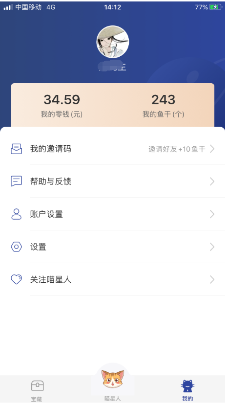
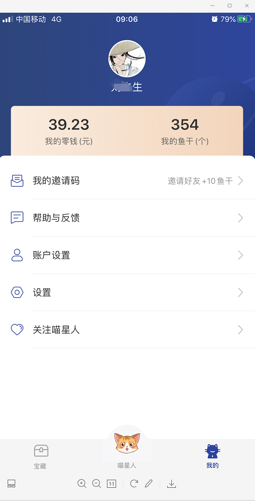
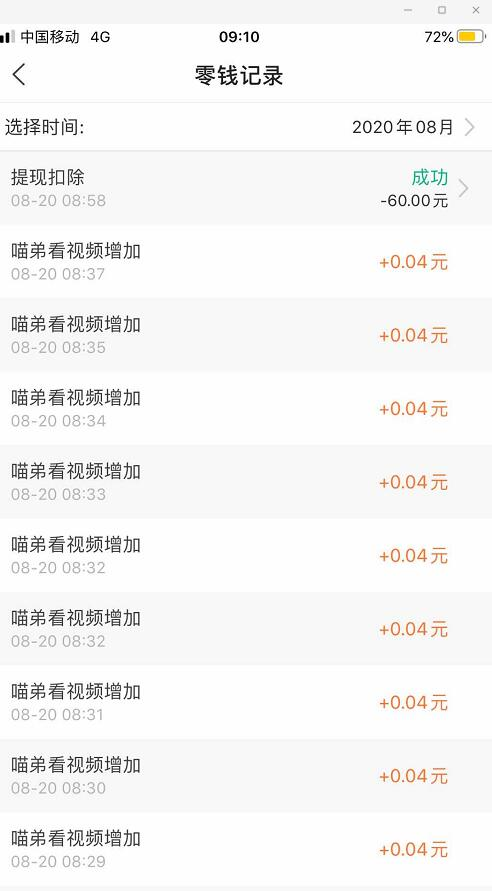
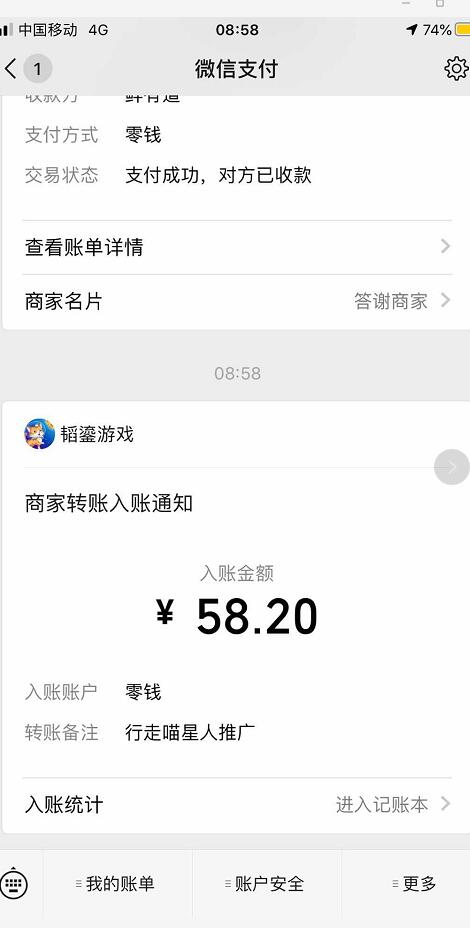
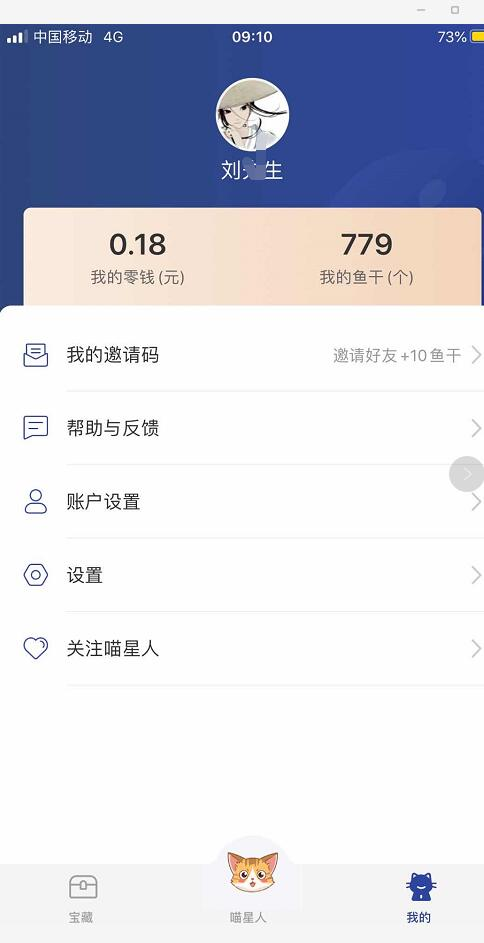

行走喵星人app赚钱是真的吗 ？最近村长在关注网赚项目，也接触了一个据说可以赚钱的APP，就叫行走喵星人app，网上说一天可以赚几十，甚至二三百元，俗话说耳听为虚眼见为实，先下载下来试试不就知道了，由于村长第一次用，也没有经验，没有添加邀请码，据说如果填写邀请码会有一些奖励，感觉村长突然错过了几个亿，不过你们比较幸运，幸亏你们看到了村长这篇文章，村长给您详细介绍一下：行走喵星人app赚钱的流程：
行走喵星人APP， 是一款以宠物与外星球为题材的养成类app，用户通过养喵达到一定等级解锁各种喵星地图，在各个场景进行探索获取宝物。目前下载的平台已经有很多了，以下平台都可以下载：（无论在哪里下载，记得填写邀请码：kgtlfe）
1、应用宝-行走喵星人
2、苹果手机App Store-行走喵星人
3、百度手机助手-行走喵星人
4、360手机助手-行走喵星人
5、豌豆荚-行走喵星人
6、PP 助手-行走喵星人
7、村长邀请码推荐：（直接扫下面的二维码下载app就行，注册的时候，记得填写邀请码：kgtlfe）会有奖励哦！
行走喵星人邀请码
下载了以后，记得填写邀请码，填完以后下一步该怎么做呢？打开以后是以下这个德行：
但是，赚钱的方式就大概5步，每日奖励，升级领红包，每日喂食，每日任务，喵星人探索，村长已经用箭头标注了，你每天去点就行，点的时候，有时候会提示你看广告翻倍奖励，那么，你就看会广告，大概30秒内。
完成这个以后，大概你的钱包了就有10几块钱了，村长玩了大概半个小时吧，看一下村长的账号，现在已经有 17.58元。
行走喵星人app赚钱是真的吗 ？填写邀请码奖励多吗？
但是，它是50元才能提现，这点有点不好，不过毕竟村长才做了一天，继续做几天看看，到底能不能赚到钱吧，后续村长会继续更新关于行走喵星人app赚钱的文章，因为，村长想看看这个APP到底是不是赚钱。
网上有很多人说赚到了钱，但是，这个有两个原因，第一，确实赚到了钱，第二，没有赚到钱，也是才尝试，他发的截图也是ps过的，为的就是让更多人的用这个APP，为行走喵星人app打广告，可能他们也蒙在鼓里，也不知道赚不赚钱，也再尝试。
因为，行走喵星人app确实也是今年才出来的APP，所以，大家对它怀疑也是情有可原的，后续村长一直会关注这个app，给网友一个满意的答复。
如果你想赚钱快一些，每日必做：
1、登录天数: 坚持每天都登录
2、签到天数：坚持每天都签到
3、升级等级: 升级到40级，这个需要时间。
4、在线时长: 每天在线挂机30分钟以上，一定多看看广告，这样奖励会翻倍哦。
5、打工任务: 每天尽量多邀请好友加入。
行走的喵星人推广奖励：
1、推广有效喵弟一次奖励2元左右
2、喵弟看视频，一个0.04元，喵小弟0.02元一个视频（这个收益挺好，可惜村长没有去推广）
3、加速进度条，更快获得神器分红，每天几百元哦。
4、集能源石，一次性获取5大50元红包；把毛绒鼠和仿真鱼加工获得52元奖励；进度条100%必定获得三神器之一，每天300到500元不等收益。
好了，行走喵星人app赚钱是真的吗 ？就简单介绍到这里，如果你感兴趣不妨下载试试，反正也不用花钱，无非就是耽误点时间，万一真的赚钱呢？你说是不是？对了，下载以后，别忘记填写，村长给你的邀请码：kgtlfe哦。
第二天测试结果如下：（如果条件不够，就去看广告，无非耽误点时间而已，每天一定要把所有的任务做完哦！）

第三天测试结果如下：（待测试中）
从下面这个图可以看出，一天也就赚了5块钱，50元提现，真不知道什么时候是个头，所以，村长认为短期行走的喵星人是不可能赚到钱的，顶多赚个花费钱，但是，如果你推广更多的好友，可能会多赚点，但是肯定不是网上说的，什么日入100-200元，前期肯定赚不了。后期，随着你的级别高，和邀请的人多了，可能赚一些，不过就目前，行走的喵星人是7月底的时候出来的，所以，最早的一批人可能赚到钱了，但是，大部分人肯定和村长一样，顶多赚个零花钱而已。至于能不能提现，我们再观察几天。

第四天测试结果如下：
不写了。
第五天测试结果如下：

村长认为五天完全可以把结果测试出来，到时候看看行走喵星人app值不值大家去做，敬请期待吧。
已经大概测试了五天，结果也出来了，刚开始1、2天，几乎每天可以得到10几块钱，后面这几天每天也就是5块左右，而且，刚开始是50元提现，现在变成了60元提现，真不知道等你到60元以后，会不会又变成70提现，所以，不建议大家去玩行走喵星人了，也不建议推荐给你的朋友，村长就没有推荐朋友玩，自己先亲自测试一下，如果确实赚钱，再去推，如果不赚钱，就没有必要推广了。
所以，如果你看到本文章，千万别再玩行走喵星人了，而且，即使你达到了提现金额，也不一定提现出来，因为行走喵星人了群里很多人都提现不了，都快炸锅了，所以，大家现在一定不要再玩行走喵星人了！！！！！
2020-8-20，村长的行走的喵星人提现了，截图如下：（今天刚提现的，现在是满60元可以提现，今天是秒到账，本来，村长认为估计等几天，没有想到真的是秒到账）


当然，它有3%的手续费，提现以后，就剩下0.18了，所以，如果你想赚点零花钱的话，可以下载一个玩玩，大概玩一周左右，就能赚60元，赚点零花钱可以。下载以后，填写邀请码：kgtlfe，然后，每天把任务完成（尤其是探索次数，最好刷完。）
任何软件村长都要亲自测试才行，现在终于提现，基本上陆陆续续玩了一周的时间，现在行走的喵星人已经恢复正常，既然能提现，那么，就可以继续玩下去了。。